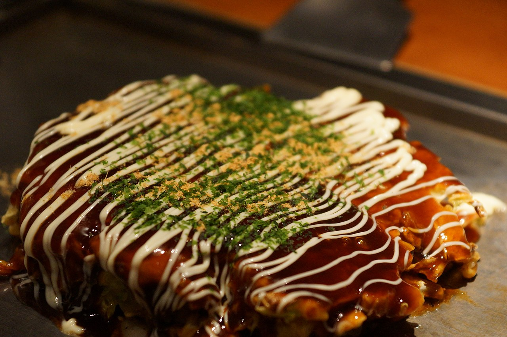

Okonomiyaki

Description
Okonomiyaki is a Japanese savory pancake that blends a flavorful batter of flour, dashi, and eggs with shredded cabbage,
green onions, and a choice of protein like pork or shrimp. Cooked on a griddle until golden and crispy, the pancake is
then brushed with a savory-sweet okonomiyaki sauce, topped with mayonnaise, and garnished with aonori and katsuobushi.
The result is a delicious and customizable dish that effortlessly combines textures and tastes, offering a delightful
culinary experience.
Ingredients
- 2 cups of all-purpose flour
- 1 ½ cups of dashi (Japanese soup)
- 3 eggs
- 4 cups of shredded cabbage
- 1 cup of sliced green onions
- 1 cup diced cooked pork or shrimp (optional)
- Okonomiyaki sauce (a mixture of Worcestershire sauce, soy sauce, ketchup, and sugar)
- Mayonnaise
- Aonori (dried seaweed flakes)
- Katsuobushi (bonito flakes)
- Vegetable oil
Steps
- In a bowl, whisk together 2 cups of all-purpose flour, 1 ½ cups of dashi, and 3 beaten eggs until smooth
- Mix in 4 cups of shredded cabbage, 1 cup of sliced green onions, and 1 cup of diced cooked pork or shrimp
- Preheat a griddle or non-stick pan over medium heat
- Ladle the batter onto the griddle, forming a round pancake. Cook for 3-4 minutes on each side or until golden brown and crispy
- Brush the top of the pancake with Okonomiyaki sauce
- Drizzle mayonnaise over the pancake and sprinkle with aonori and katsuobushi
- Once cooked and topped, serve the Okonomiyaki immediately while it's hot